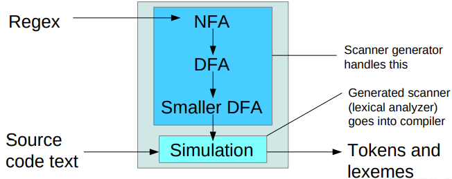
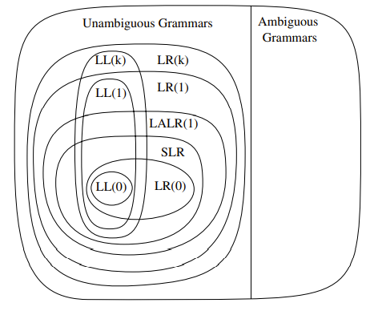
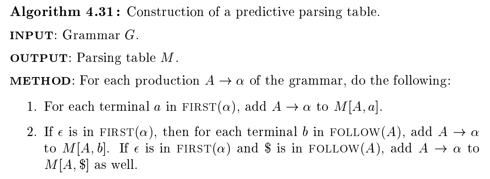
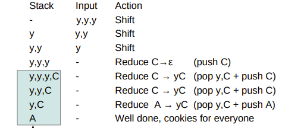
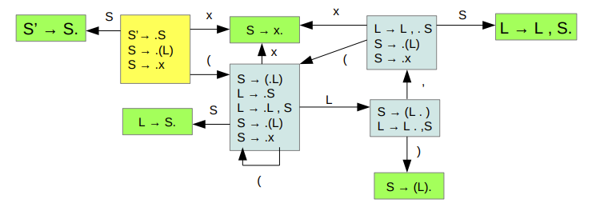
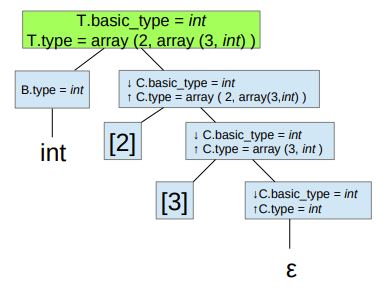
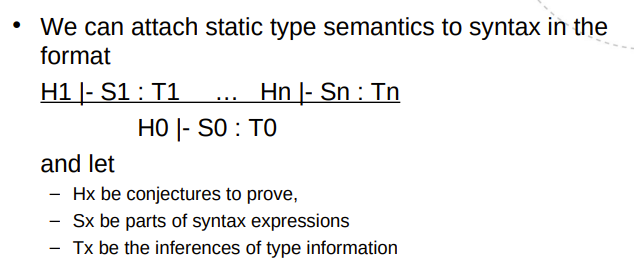
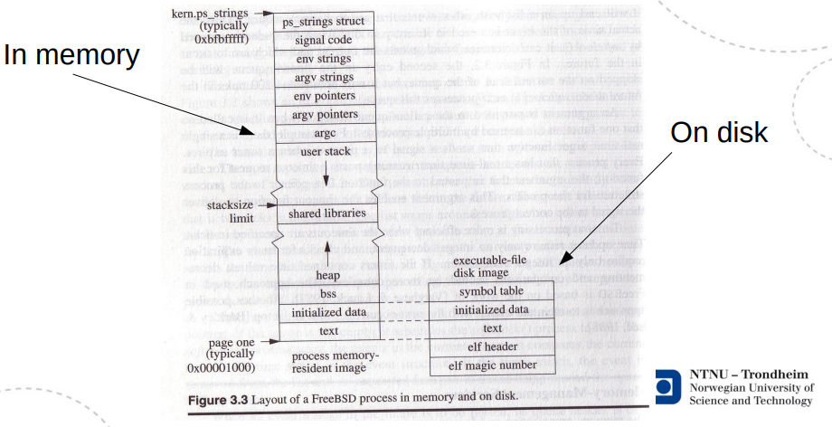

Lecture Notes
Overview
From source code to an executable program, there is
- Preprocessing
- Lexical analysis (scanning)
- Syntactical analysis (parsing), creation of intermediate representation (IR)
- Semantic analysis
- Lowering of intermediate representation
- Optimization
- Code generation
- Assembly
- Linking
Lexical analysis (scanning)
- Lexemes are units of lexical analysis, words like
x,while, or42. - Tokens are units of syntactical analysis, like
identifier,keywordornumber. - Semantics assign computational meaning to valid strings in a programming language syntax.
- An alphabet is any finite set of symbols. is the alphabet of binary strings.
- A language is a set of valid strings over an alphabet. Languages may form unions , and be concatinated , . We also have the Kleene closure and the Positive closure .
Regular languages can be recognized by finite automata (state machines) and reg.ex. (regular expressions). Thus, we have three representations:
- a graph representation of an automata where nodes are states and edges are transistions. We have a single starting state and one or more accepting states. Transitions are marked with sets of single characters that they apply to. Useful for visualizations and optimizations.
- a table representation of an automata. Useful for writing programs that do what the graph does.
- a regular expression representation. Useful for generating automaton programs automatically.
Regular expressions are defined by
- a character, stands for itself. (or , the empty string)
- concatenation,
- selection,
- grouping,
- Kleene closure,
We can prove that an NFA (Nondeterministic Finite Automata) can be constructed from any regular expression by constructing NFA's for each of the five preceding cases. This is the McNaughton-Thompson-Yamada algorithm.
NFA's admit multiple transitions on the same character, and transitions on the empty string . A deterministic FA does not.
Closures are the outcome of repeating a rule until the result stops changing (possibly never).
Subset construction is used to transform a NFA to a DFA. We want to group equivalent states (-closures) together. is the set of states that you can reach from when the input character is .
- Number all states
- Write the transition table, with for each visited state and possible input , starting from the initial state
- Build the DFA according to the transition table. Any -closure that contains an original accepting state, is an accepting state in the DFA.
Systematic minimization is used to optimize a DFA.
- Start with two groups: all non-final states and all final states.
- Within a group, check pairs (or subsets?) for equivalence. If found, these are separated into their own group.
- In the end, the equivalence groups may be merged to create a minimized DFA
To summarize, the McNaughton-Thompson-Yamada algorithm translates a regular expression to an NFA. Subset Construction translates an NFA to a DFA. Systematic minimization optimizes a DFA, resulting in one with minimal number of states. This is performed in problem set 1 of the course.

// TODO: Lex
Syntactical analysis (parsing)
- Top-down
- Easy to do by hand
- LL(1)
- Bottom-up
- More general, best done by generators
- LR(0) - Useless but interesting
- SLR - easy extension of LR(0)
- LR(1) - super general, very complicated
- LALR - compromise
Grammars and production rules (EBNF)

- Non-terminals (capitalized)
- Terminals (lowercase)
- Start symbol
- Productions: head -> body
- head: nonterminal
- body: sequence of terminals and non-terminals
A grammer is ambiguous when it admits several syntax trees for the same statement. These are of no use to us, they must be fixed. This can be solved by altering the language or assign priorities to the productions.
Left factoring and left recursion
Left factoring shortens the distance to the next nonterminal
E.g. from
- A abcdef | abcxyz
To
- A abcA'
- A' def | xyz
Left recursion elimination shifts a nonterminal to the right
E.g. from
- A A a | a
To
- A a A'
- A' a A' |
Top-down parsing and LL(1) parser construction
The “LL” in LL(1) is
- Left-to-right scan
- Leftmost Derivation (always expand the leftmost nonterminal)
Recursive descent means we follow the children of a tree node through to the bottom, where there must be a terminal. Backtrack, and repeat. When there is choice, utilize the lookahead symbol.
This requires that the grammar is suitable, but we can adapt them somewhat (left factoring, left recursion elimination)
We find
- , the set of terminals that can appear to the left in , where is any combination of terminals and nonterminals.
- ,
trueif the nonterminal can produce the empty string,falseotherwise. - , the set of terminals that can appear directly to the right of the nonterminal .

Bottom-up parsing and LR(0) parser construction
Bottom-up parsing buffers input until it can build productions on top of productions.

Key ingredients:
-
An internal stack to shift and reduce symbols on
-
An automaton that can use stacked history to backtrack its footsteps
-
A grammar with one and only one initial production
-
LR(0): Restrictive
-
SLR: LR(0) + FOLLOW sets
-
LR(1): As general as we want
-
LALR: LR(1), but merge identical states
The LR(0) automaton
- We’re tracking all the different things that can happen throughout a derivation (there will be closures of related things)
- The states represent all the different paths that may have led to them
- Some states are reducing, that means
- Pop body, push head
- Revert to where we started recognizing the present production
- Transitions shift symbols
- They are what moves us ahead while working toward a reduction
To make the LR(0) automaton, start with the designated start item
- Find its closure, make a state
- Follow all the transitions
- Repeat from 1, until you reach the reduction X’ → X at the other end.

Syntax Directed Translation and attributes
Semantic actions can be attached to grammar productions, and executed while parsing. They may for example derive or synthesize symbol attributes. In a syntax tree representation, inherited attributes come from above, synthesized attributes come from below. L-attributed grammars allow synthesized attributes, and inheritance from the left. Top-down grammars support L-attribution. In S-attribution, all attributes are synthesized. Bottom-up grammars support S-attribution.

Semantics
Painting with broad strokes, we have
- Operational semantics, which describe the meaning of a statement in terms of what you do to the environment in order to create its effect
- Denotational semantics, which describe how the environment is affected by a statement without specifying the steps taken to make it so
- Axiomatic semantics, which describe properties of the environment which are preserved throughout a statement
Type checking and type judgments (TODO, slides 14-15)
So, what’s a type judgment?
- It’s a claim about a statement, written
|- E : Twhich reads “E is a well-typed construct of type T” - Type-checking a program P requires demonstrating that
|- P : Tfor a type T - It can be done by traversal and attribution
- It can be done by some other logical inference engine
Proof Tree

Three-address code (TAC) (Slides 16)
Simple CPU design, X86_64 Assembly language, the run-time stack and function calls (slides 17-18, 20-21)
The basic x86 approach
- Arguments need to go on the stack
- The calling function handles putting them there, and taking them away again
- Return address must go on the stack
- The calling function handles it, because it knows where to resume execution
- Local variables need to go on the stack
- The called function knows how much space they will need, and allocates it
- Stack is both local namespace and temporary results
- Stack pointer deals with intermediate results
- Frame pointer locates the start of the local namespace
- Return value must go somewhere
- A designated register plays this part
Text segment, a function
########################
_factorial:
(setup stackframe)
(copy args)
(compute)
(remove stackframe)
(return result)
x86 Example
########################
.globl main
.section .data
hello:
.string "Hello, world! %ld\n"
.section .text
main:
pushq %rbp
movq %rsp, %rbp
movq $42, %rsi
movq $hello, %rdi
call printf
leave
ret
An activation record, on stack
########################
..
Next call's local variables
My frame ptr.
------------------- <
Return address
Arguments
(Intermediate data)
Local variables
Caller's frame ptr.
------------------- <
Return address
Arguments
..

(Simple) Objects (slides 19)
Introduction to optimizations (slides 22)
- Function inlining
- Function cloning
- Constant folding
- Compile-time calculations of expressions with known values
- Constant propagation
- Unreachable/dead code elimination
- Loop-invariant code motion
- Common sub-expression elimination
- Strength reduction
- Replace expensive operations with cheaper ones, e.g. replace multiplication by addition
- Loop unrolling
Dataflow Analysis Framework (slides 27, 28, 29)
| Analysis | Domain | Direction | Meet Op. |
|---|---|---|---|
| LV | Variables | backward | union |
| CP | Pairs of vars | forward | intersection |
| AE | Expressions | forward | intersection |
| RD | Assignments | forward | unions |
| CF | Variable "constant-ness" | forward | meet CF |
More optimization
Loop detection
- Dominator relation
- Identifying invariant code
Instruction selection
- Build DAG of the computation
- Tile the DAG, obtaining abstract assembly
Register allocation
- Goal: keep variables in registers as long as possible (minimize memory accesses)
- Main idea: Two variables can’t share the same register if they are live simultaneously
- Live variable analysis -> interference graph (who are live simultaneously?) -> graph (k) coloring
- k is the number of registers
- When all nodes have k or more neighbors, pick one and mark it for spilling (a place in the activation record)
- Some variables need designated registers, they are precolored nodes